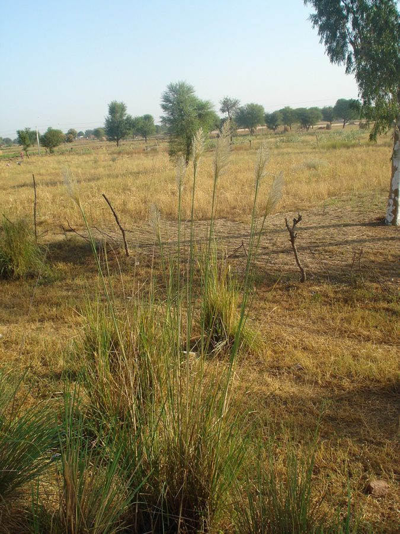

मूँजMunja Grass
Saccharum munja · Poaceae · FLR-0003

- Scientific name
- Saccharum munja Roxb.
- Family
- Poaceae
- Hindi
- मूँज
- Status here
- native
- IUCN
- not evaluated
When to look कब देखें
Present all year.
मूँज / Munja Grass
Saccharum munja Roxb. — Poaceae
मूँज — एक लंबी, मज़बूत घास जो नदी किनारे की मिट्टी को थामे रखती है, खेत के लिए रस्सी देती है, और दर्जनों जीवों को आश्रय देती है — जिसकी उपयोगिता गाँव में कोई नहीं नकारता, भले ही कोई सोचता नहीं।
Quick Identification त्वरित पहचान
| Feature | Description |
|---|---|
| Height | Tall perennial grass growing in dense clumps, 2–4 m in height |
| Leaves | Long, narrow (60–120 cm) with sharp, skin-cutting serrated edges and a prominent white midrib |
| Stem (culm) | Erect, solid (not hollow), slightly glaucous bluish-grey when young |
| Inflorescence | Large, feathery, silvery-white terminal plume (30–60 cm long), appearing in October–November |
| Roots | Deep, extensive, fibrous root mat that anchors soil firmly |
Field tip: Look for tall 2–4 meter high dense grass clumps with razor-sharp leaf edges on riverbanks or canal embankments. In October–November, their bright, feathery, silvery-white plumes are unmistakable and can be seen from miles away.
Morphology आकारिकी
Biometrics (typical measurements in the Gangetic plain):
| Feature | Measurement |
|---|---|
| Plant height | 2–4 m |
| Leaf length | 60–120 cm |
| Leaf width | 1.0–2.0 cm |
| Plume (panicle) length | 30–60 cm |
| Stem (culm) diameter | 1.0–2.0 cm |
Root system: Extensive, deep fibrous root mat. Rhizomes spread laterally, anchoring soil firmly. This is the key to its use as a bank stabiliser — the root system holds soil against flood erosion.
Culm (stem): 2–4 m tall, erect, solid, 1–2 cm diameter at base. Nodes visible along the length. Surface slightly waxy-glaucous. Unlike sugarcane, it does not have sweet sap and the stems are not eaten directly.
Leaves: 60–120 cm long, 1–2 cm wide, narrowing to a fine point. Midrib pale, prominent on underside. Leaf margin sharply serrate — the silicon-reinforced edges can cause skin cuts. Sheath clasps the stem; hairy at the junction with leaf blade (ligule zone).
Inflorescence: A large terminal panicle 30–60 cm long. Spikelets tiny, surrounded by long silky hairs that form the characteristic silvery plume. Wind-pollinated. Appears October–November — after the post-monsoon dry-down.
Seeds: Very small, enclosed within the spikelet with silky hairs. Wind-dispersed.
हिंदी: जड़ें गहरी और फैली हुई — मिट्टी को कसकर थामती हैं। तना ठोस, 2–4 मीटर। पत्तियाँ तेज़ धार — सावधानी से पकड़ें। फूल: अक्टूबर-नवम्बर में चाँदी-सफेद पंख जैसे गुच्छे।
Ecological Role पारिस्थितिक भूमिका
Bank stabiliser: Saccharum munja is the primary natural protection of riverbanks, canal embankments, and field bunds in the Gangetic plains. Its deep root mat holds soil against monsoon flood erosion. Without it, riverbanks cut back faster, fields flood more, and roads erode. This service is taken for granted until it disappears.
Carbon store: Large perennial grasses store significant carbon in their root systems. Clearing mūñj patches reduces soil carbon stocks.
Habitat: Dense mūñj clumps provide:
- Nesting sites for birds — Ashy Prinia (Prinia socialis), weavers, reed warblers nest in the clumps
- Cover for small mammals — mongoose, rats, shrews
- Roost sites for snakes — particularly rat snakes and keelbacks
- Hunting grounds for raptors — Shikra, Kestrel hunt the open margins
Insect diversity: The tall stems, leaf litter, and root zones host a distinct community of grassland insects — planthoppers, grasshoppers, stem borers, and their predators.
हिंदी: मूँज नदी किनारे और पाल को बाढ़ से बचाती है — यह सेवा तब तक नज़र नहीं आती जब तक मूँज काट दी जाए।
इसके झुंडों में राखी फुदकी (BRD-0001), बया पक्षी, और वार्बलर घोंसला बनाते हैं।
नेवले, चूहे, और साँप इसमें रहते हैं।
Human Use / Economic Importance मानव उपयोग और आर्थिक महत्व
This is Saccharum munja's most important dimension for rural eastern UP. It is a traditional economic grass with multiple applications:
Rope-making (मूँज की रस्सी): The most important traditional use. Leaf blades, after harvesting and drying, are twisted into rope by hand. Mūñj rope is strong, durable, and resistant to moisture — used in agriculture (tying bundles, securing loads), construction (binding thatch), and charpai (traditional bed) weaving. Professional rope-makers (called munjaras in some areas) were once a recognised craft community.
Mat and basket weaving (चटाई और टोकरी): Leaves woven flat for sleeping mats (chataai). Coarser baskets and containers woven from fresh stems.
Thatching (छप्पर): Dried culms and leaves used as roofing thatch material, especially for cattle sheds and temporary structures.
Sacred use: Mūñj rope figures in Vedic rituals — the muñjamekhalā (sacred girdle of mūñj) is tied during the upanayana (sacred thread) ceremony in some traditions, particularly among Brahmin families in UP.
हिंदी:
मूँज की रस्सी: सबसे महत्वपूर्ण उपयोग। पत्तियाँ सुखाकर हाथ से बटी जाती हैं — मज़बूत, टिकाऊ, नमी-रोधी। खेती, बाँधने, चारपाई बुनने में।
चटाई: पत्तियों से बुनी जाती है।
छप्पर: गाय के बाड़े और अस्थायी छत के लिए।
पवित्र धागा: कुछ परम्पराओं में उपनयन संस्कार में मूँज की करधनी बाँधी जाती है।
Life Cycle / Phenology जीवन चक्र
Saccharum munja is a perennial grass — it does not die and regrow annually but persists for years or decades in the same clump, expanding laterally by rhizome spread.
| Month | State | हिंदी |
|---|---|---|
| Jan–Feb | Dormant; old culms standing dry | पुराने तने खड़े, सूखे |
| Mar–Apr | New shoots emerging from base | नई कोंपलें |
| May–Jun | Active growth; leaves elongating | तेज़ वृद्धि |
| Jul–Sep | Full height; lush green | पूरी ऊँचाई; हरी |
| Oct–Nov | Inflorescence — silvery plumes | चाँदी-सफेद फूल — सबसे पहचानने वाला समय |
| Dec | Seeds dispersed; culms dry | बीज उड़ गए; तने सूख रहे |
Harvesting: Traditionally harvested in winter (December–February) after the plumes have dispersed. Leaves stripped by hand or with a hooked tool. Harvesting does not kill the plant — rhizomes persist and regrow next season.
हिंदी: बारहमासी — हर साल जड़ से नया उगता है, दशकों तक। अक्टूबर-नवम्बर में फूल आते हैं। दिसम्बर-फरवरी में पत्तियाँ काटी जाती हैं।
Agricultural / Human Relevance कृषि और मानव संबंध
Not a weed: S. munja is not a crop pest. It does not invade agricultural land — it stays on embankments, margins, and unploughed ground. Farmers deliberately allow it on field bunds because its roots prevent bund erosion.
Declining use: Synthetic ropes (nylon, polypropylene) have largely replaced mūñj rope in rural UP over the last 30 years. As demand dropped, fewer people maintain the knowledge of rope-twisting. The plant itself remains common, but the craft knowledge is fading.
Conservation of skill: Traditional mūñj rope-making is an endangered craft in many areas. Recording it alongside the plant — who still knows how, what tools are used, seasonal timing — is a valid citizen science activity.
हिंदी: मूँज खेत में नहीं घुसती — यह मेड़ों और किनारों पर रहती है। किसान जानबूझकर मेड़ पर रहने देते हैं क्योंकि इसकी जड़ें मिट्टी को थामती हैं।
नायलॉन रस्सी आने के बाद मूँज रस्सी बनाने की कला कम हो गई है। यह परम्परागत ज्ञान दर्ज करना भी एक नागरिक विज्ञान कार्य है।
Expected Locally स्थानीय रूप से अपेक्षित
Not a field record. Written from published accounts for eastern Uttar Pradesh. No confirmed local sighting yet — if you have seen it, that is what the atlas needs.
अभी तक स्थानीय पुष्टि नहीं। यह विवरण प्रकाशित स्रोतों से है, किसी अवलोकन से नहीं।
Commonly observed along the banks of the Ghaghara, Rapti, and Kuwano rivers in Basti district. It forms dense, continuous belts on sandbanks and embankments. The harvesting of Munj leaves for traditional rope-making is still practiced by some older community members in rural villages of Basti, although it has declined.
Distribution वितरण
Global range: Native to the northern parts of South Asia, extending from Afghanistan and Pakistan through northern India to Nepal and Bangladesh.
In India: Widespread across the Indo-Gangetic plains of northern and eastern India, particularly in Punjab, Haryana, Uttar Pradesh, Bihar, and West Bengal.
In Uttar Pradesh: Extremely common across the state, particularly along the floodplains of the Ganges, Yamuna, Ghaghara, and Rapti rivers.
In Basti district / eastern UP: Abundant along all riverbanks, canal banks, and low-lying waterlogged areas throughout the district.
Range notes: No significant range changes documented.
Research Questions शोध प्रश्न
Anyone can investigate these | कोई भी इन प्रश्नों की जाँच कर सकता है
- Where are the largest mūñj patches near your village? / आपके गाँव के पास सबसे बड़े मूँज के झुंड कहाँ हैं? — GPS and area estimate. Track over years — is mūñj expanding or contracting?
- Which birds nest in mūñj clumps? / मूँज में कौन सी चिड़िया घोंसला बनाती है? — Search carefully in March–May without disturbing. Note species, height from ground.
- Who still makes mūñj rope? / मूँज की रस्सी अभी कौन बनाता है? — Interview older farmers and craftspeople. Document the process.
- What insects live in mūñj? / मूँज में कौन से कीड़े रहते हैं? — Beat the stems over a white cloth and identify what falls out.
- Does mūñj cut-back after road widening affect bird nesting? / सड़क चौड़ीकरण के बाद मूँज कम होने पर पक्षियों पर क्या असर पड़ता है? — Compare bird counts in areas with vs. without mūñj on roadsides.
Similar Species मिलती-जुलती प्रजातियाँ
Eastern UP has several tall grasses that can be confused with S. munja in the field:
| Species | Hindi Name | How to tell apart |
|---|---|---|
| Saccharum spontaneum | काँस (Kaans) | Narrower leaves; smaller, more open plume; very common along river sandbanks |
| Saccharum benghalense | सरकंडा (Sarkanda) | Hollow stem; used for mat-making; slightly different leaf texture |
| Phragmites australis | नरकट / नल (Narkat) | Hollow, thick stem; more purplish plume; grows in standing water |
| Arundo donax | नरकट / दूध नल | Even taller (4–6 m); bamboo-like; rare in UP |
Field rule: Solid stem + thick rhizome clump on earthen banks + sharp-edged leaves + silvery plume in October–November + rope-making history = Saccharum munja.
Taxonomy & Classification वर्गीकरण
Original description. Saccharum munja was described by William Roxburgh in 1813 in Hortus Bengalensis, p. 6. Type locality: India. The genus name Saccharum is from the Greek sakcharon (sugar), referring to the sweet stems of some species in the genus.
Subspecies. Monotypic — no subspecies are currently recognised.
Family and order placement. Placed in the order Poales, family Poaceae (grass family), subfamily Panicoideae, tribe Andropogoneae. Poaceae is one of the most ecologically and economically important plant families in Uttar Pradesh.
Phylogenetic notes. Saccharum munja is closely related to sugarcane (Saccharum officinarum) and Saccharum spontaneum. The taxonomic limits between Saccharum, Tripidium, and ex-Saccharum lineages are subject to ongoing molecular review.
IUCN status rationale. This species has not been formally assessed by the IUCN Red List (Not Evaluated). However, it is highly abundant and widespread across its native range, with no major conservation threats.
Photo Gallery फोटो गैलरी
References संदर्भ
- Roxburgh, W. (1813). Hortus Bengalensis, or a Catalogue of the Plants Growing in the Honourable East India Company's Botanic Garden at Calcutta. Mission Press, Serampore.
- Hooker, J.D. (1897). Flora of British India, Vol. 7. Reeve & Co., London.
- Noltie, H.J. (2000). Flora of Bhutan, Vol. 3, Part 2. Royal Botanic Garden, Edinburgh.
- Bor, N.L. (1960). The Grasses of Burma, Ceylon, India and Pakistan. Pergamon Press.
- Singh, K.P. & Kushwaha, C.P. (2005). Diversity of flowering phenology of trees in a tropical deciduous forest in India. Current Science, 89(12): 1901–1905.
- Botanical Survey of India — Flora of Uttar Pradesh.
- GBIF Occurrence Data — Saccharum munja records (2010–2024).
Source file: species/flora/grasses/saccharum_munja.md